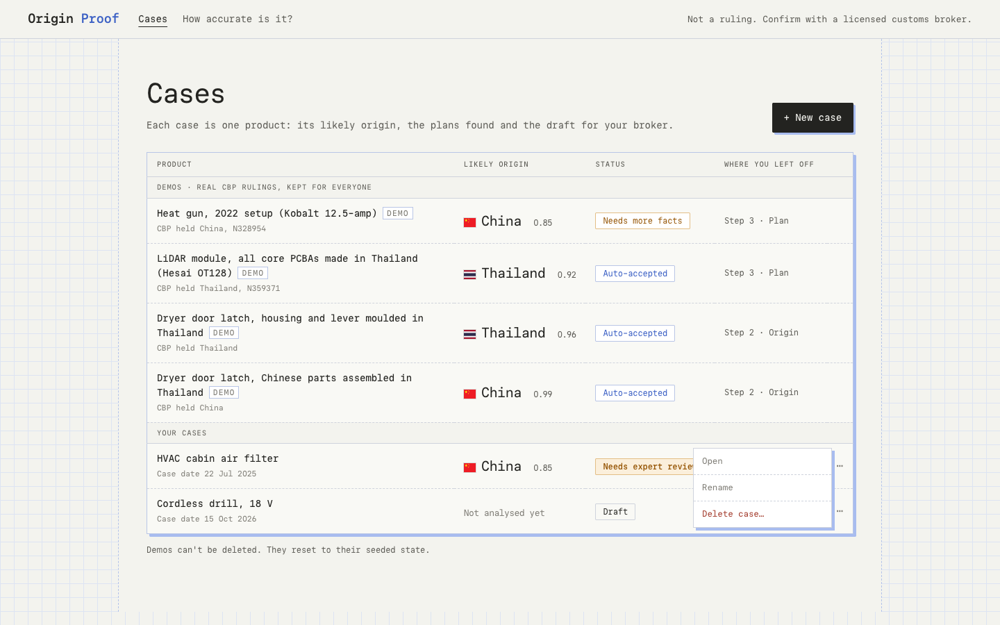
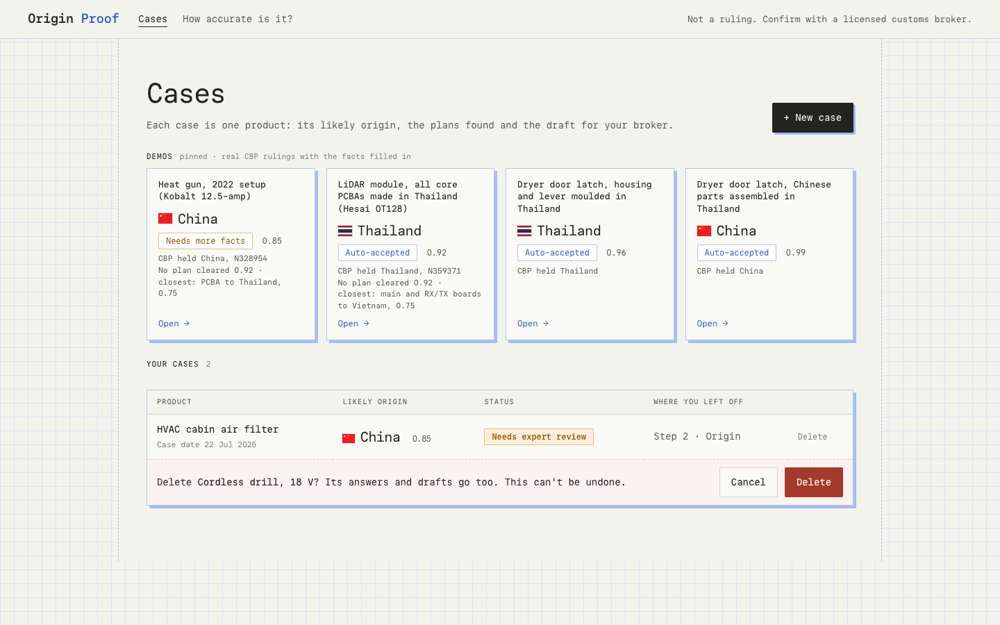
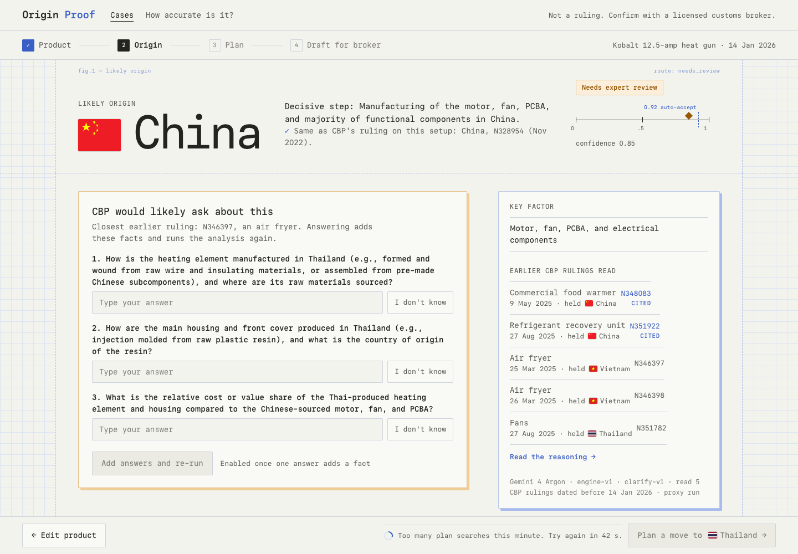
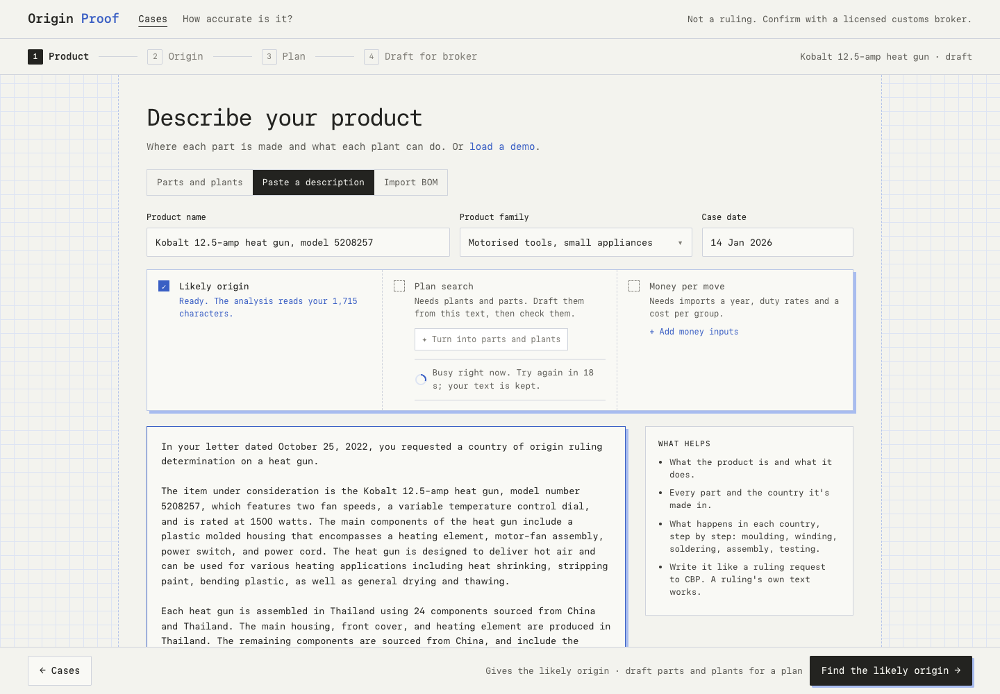
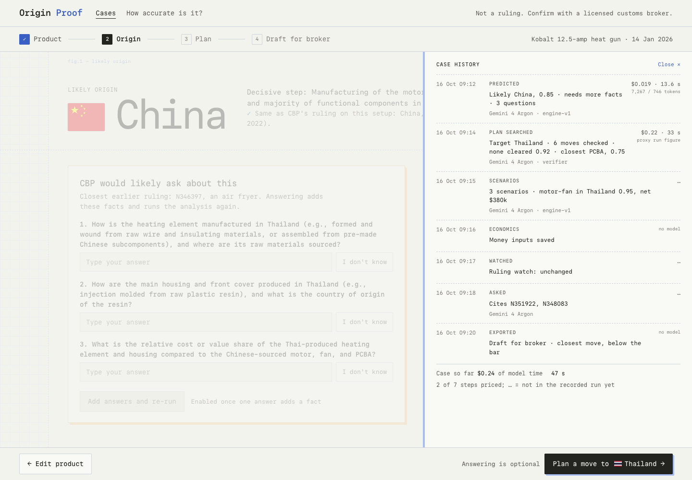
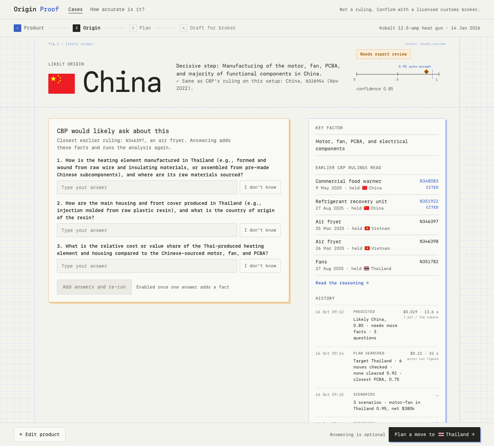

Pinned demos and delete on Cases home, the rate-limit note, and case history with cost per step (backend feat/origin-proof-demo 43315ef). Demo rows use the demo-seed run (eval/results/demo-seed-litellm.json).






Cases option 2, the rate-limit note as drawn, and history option 1 (the drawer).